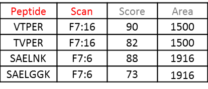
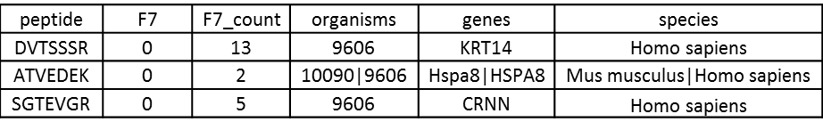

de novo Searches¶
de novo searches yield peptide sequences without a reference database. ProteoClade enables the ability to annotate de novo search results to understand which organisms are present in the sample and what proteins they are expressing.
File Format Requirements¶
Files generated from de novo search engines, like PEAKS, are typically in long format rather than wide format – i.e., there is a single column for all samples. Candidate PSMs (multiple suggestions for one MS/MS scan) can be used as long as the file is sorted first by sample:scan, and second by score (in descending order). The required input format for these files is a .csv or .txt with the following columns (required: RED, optional: GREY):
The table must contain:
Exactly one peptide column (options: Sequence, Peptide, pep_seq)
Exactly one sample column (options: Sample, Scan). Formatting for this column must be: Sample:Scan.
At most one score column (options: Score, ALC (%))
At most one quantitation column (options: Area, Intensity)
Annotation¶
These files can be annotated in the same way as peptide files for targeted searches, but instead using the function annotate_denovo. The parameters are the same with one change: a PSM matching method option is added.
In order to preserve memory, this function generates a “denovo_matched” file containing only organisms and genes from the PCDB file and then invokes the annotate_peptides function on that file to add additional taxa, if specified in the taxon_levels parameter.
A typical output will include the peptide sequences, sample quantitation, spectral counts for that peptide, organisms, genes, and higher taxa if specified:
